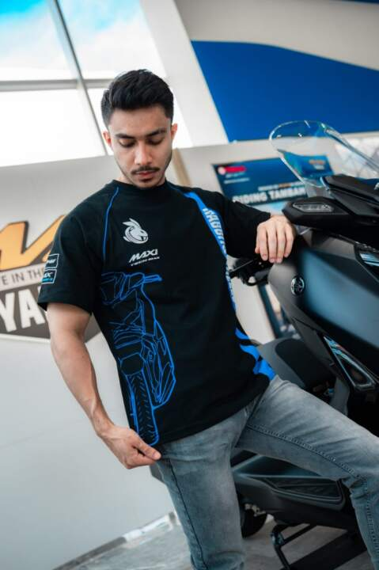

Daftar Isi
Bagi seorang bikers sejati, sepeda motor bukan sekadar alat transportasi, melainkan perpanjangan dari identitas diri. Menyadari hal tersebut, Yamaha Indonesia Motor Manufacturing (YIMM) tidak hanya berinovasi pada teknologi mesin, tetapi juga pada gaya hidup pengendaranya. Menyambut tahun 2026, Yamaha secara resmi meluncurkan koleksi lengkap Apparel & Aksesoris Resmi (Yamaha Genuine Apparel & Accessories) yang dirancang untuk memenuhi kebutuhan berbagai karakter pengendara.
Koleksi tahun ini mengusung tema "The Spirit of Challenge", yang memadukan DNA balap Yamaha yang agresif dengan sentuhan urban lifestyle yang modern. Mulai dari helm dengan sertifikasi keamanan tingkat tinggi, jaket riding yang breathable namun protektif, hingga aksesoris performa untuk mendongkrak tampilan motor kesayangan Anda.
Dalam ulasan eksklusif ini, kita akan membedah secara mendalam setiap kategori produk yang ditawarkan, teknologi material yang digunakan, serta bagaimana aksesoris ini dapat meningkatkan pengalaman berkendara Anda menjadi lebih aman, nyaman, dan tentunya, stylish.
1. Kategori Racing Line: DNA MotoGP untuk Harian
Bagi Anda penggemar kecepatan dan ajang balap paling bergengsi di dunia, kategori Racing Line adalah surga. Yamaha menghadirkan replika team wear yang digunakan oleh pembalap Monster Energy Yamaha MotoGP.
Koleksi ini mencakup Polo Shirt, T-Shirt, Topi, hingga Pit Shirt dengan material Dri-Fit premium yang mampu menyerap keringat dengan cepat, sangat cocok untuk iklim tropis Indonesia. Desainnya didominasi warna biru ikonik Yamaha dengan aksen hitam dan logo sponsor yang presisi, memberikan aura sporty yang kental bahkan saat Anda sedang tidak berkendara.
2. Street Culture & Urban Lifestyle
Tidak semua bikers ingin tampil seperti pembalap setiap saat. Untuk penggunaan harian (daily commuting) atau sekadar sunmori santai, Yamaha menghadirkan lini Street Culture. Highlight dari kategori ini adalah Bomber Jacket dan Hoodie dengan desain minimalis namun futuristik.
Jaket pada lini ini dilengkapi dengan fitur windproof (anti angin) dan water-repellent (tahan percikan air), menjaga tubuh tetap hangat saat berkendara malam hari namun tidak gerah di siang hari berkat adanya ventilasi tersembunyi. Tersedia juga tas selempang (sling bag) dan waist bag ergonomis yang dirancang agar tidak mengganggu posisi berkendara.
"Yamaha percaya bahwa style tidak boleh mengorbankan safety. Setiap apparel kami telah melalui uji durabilitas yang ketat."
3. Aksesoris Heritage: Sentuhan Retro Modern
Khusus bagi pemilik Yamaha XSR 155 dan Fazzio yang mencintai gaya klasik, Yamaha merilis aksesoris khusus bertema Heritage. Anda dapat menemukan sarung tangan kulit asli (genuine leather gloves) dengan warna cokelat vintage yang semakin lama dipakai akan semakin nyaman dan berkarakter.
Selain apparel, tersedia juga aksesoris motor (parts) seperti Headlight Grill, Tank Pad berbahan karet premium, dan jok custom dengan jahitan klasik yang menambah kesan "custom bike" tanpa perlu memodifikasi rangka asli.

4. Performance Parts & Touring Gear
Untuk pengguna Maxi Yamaha (NMAX, Aerox, XMAX) yang gemar melakukan perjalanan jauh, koleksi 2026 menghadirkan High Windshield polikarbonat yang tahan benturan dan efektif memecah angin. Tersedia juga Comfort Seat dengan busa memori yang mengurangi pegal saat duduk berjam-jam.
Di sektor performa, Yamaha bekerja sama dengan KYB untuk menghadirkan suspensi belakang tabung (sub-tank suspension) yang bisa disetel preload dan rebound-nya. Tidak ketinggalan, sistem pembuangan (knalpot) resmi yang dikembangkan bersama Sakura dan Akrapovic, memberikan suara yang lebih bulat dan peningkatan tenaga namun tetap lolos uji emisi dan kebisingan jalan raya.
Pertanyaan Sering Diajukan (FAQ)
Dimana saya bisa membeli apparel resmi ini?
Seluruh koleksi tersedia di jaringan Dealer Resmi Yamaha (3S), Flagship Shop, dan juga Official Store Yamaha Motor di marketplace terkemuka.
Apakah ukuran apparel sesuai standar Indonesia?
Ya, seluruh apparel Yamaha Indonesia menggunakan standar ukuran Asian Fit yang telah disesuaikan dengan postur tubuh rata-rata orang Indonesia.
Apakah aksesoris resmi menggugurkan garansi motor?
Tidak. Penggunaan Yamaha Genuine Accessories (YGA) yang dipasang di bengkel resmi tidak akan menggugurkan garansi kelistrikan atau mesin motor Anda.
Kesimpulan
Koleksi Apparel & Aksesoris Resmi Yamaha 2026 membuktikan komitmen Yamaha untuk menemani konsumennya tidak hanya di atas aspal, tetapi juga dalam gaya hidup sehari-hari. Dengan variasi produk yang mencakup racing, lifestyle, heritage, hingga touring, setiap pengendara dapat mengekspresikan jati dirinya. Pastikan selalu membeli produk asli untuk jaminan kualitas dan keselamatan maksimal. Kunjungi dealer terdekat dan upgrade gaya berkendara Anda sekarang!


Sari Lifestyle
Fashion Editor & Rider @YamahaStyleBagikan artikel ini: